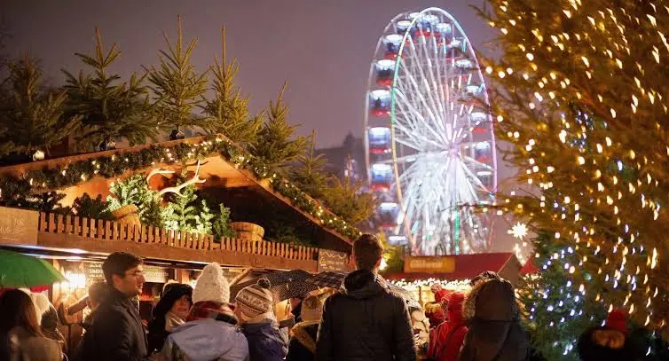

Edinburgh Christmas markets:
a calm, slow guide for 2026.
The dates, the places and the practical details for 2026, and how to enjoy the season without spending the whole trip in a crowd.

There is a moment just after dusk
Usually just after dusk, Edinburgh Castle glows against the dark and the lights in Princes Street Gardens come on, one stall at a time. If you stand still for a minute, you can smell cinnamon and woodsmoke, hear music somewhere in the distance, and feel the cold settle on your cheeks. That moment is why people come to Edinburgh at Christmas.
The trouble is that most guides treat the markets like a checklist: eat this, ride that, queue here. This guide takes a slower view. It covers the practical details for 2026, such as dates, locations, getting around and what costs money, and then shows you how to enjoy the season without the crowds.
Edinburgh's Christmas 2026 at a glance
- Dates. Saturday 14 November 2026 to Sunday 3 January 2027. [1]
- Main market. East Princes Street Gardens, below the castle rock and next to Waverley station.
- Entry. Free to walk around the market. Rides and some attractions need a ticket.
- Usual hours. Around 10am to 10pm daily, with shorter hours on a few dates such as Christmas Eve.
- Closed. Christmas Day, 25 December.
Opening hours can change, especially around Christmas Eve, Boxing Day and New Year. Check the official Edinburgh's Christmas information in the week you travel.
Where the Christmas markets are
Edinburgh's Christmas is not one market but a handful of sites within walking distance of each other. Knowing which is which saves a lot of wandering.
East Princes Street Gardens
The heart of it. This is the traditional market, with wooden chalets selling gifts, decorations, mulled wine and hot food, set in the valley between Princes Street and the castle rock. Edinburgh's first Christmas market opened in 1999 as a small German market, and the stalls still lean into that European tradition. [2]
West Princes Street Gardens
The family side of the festival. It holds the festive funfair and children's attractions, so it is louder and busier than the east gardens. If you are travelling without children, you can happily skip it.
George Street
In recent years the festival has spread onto George Street, one of the New Town's grandest streets, where you will find further festive attractions. It tends to feel more relaxed than the gardens, and the Georgian architecture makes a lovely backdrop. Check the official programme for what is on there this year.
Castle Street Market
A smaller seasonal market with the castle behind it. It runs on select dates from 25 November to 22 December 2026, so check the dates before you plan around it. [2]
Temporary ramps and paths can be steeper than usual. If you use a wheelchair or travel with a pushchair, allow extra time, check the official accessibility information, and ask staff at the entrance for the easiest route.
How to get to the markets
Edinburgh's Christmas is in the middle of the city, so you almost never need a car.
- By train. Edinburgh Waverley station sits right next to the gardens. Leave by the Princes Street exit and you are at the market within a few minutes.
- By tram. The tram from the airport runs along Princes Street, which puts you at the edge of the gardens.
- By bus. Many city buses stop on or near Princes Street.
- On foot. If you are staying in the Old Town or New Town, walk. It is the nicest way to arrive anyway.
If you are driving, park outside the centre and use public transport. City-centre streets get congested in December and parking is expensive.
When to go for fewer crowds
Weekends and the run-up to Christmas are the busiest times, particularly Saturday evenings. For a calmer visit, try these ideas:
- Go on a weekday morning or early afternoon. The first hours after opening are noticeably quieter, so you can browse properly and talk to the makers.
- Visit in the first or last weeks of the season. Late November and early January are often calmer than the days around 20 December.
- Come back after dark on a weekday. The lights are at their best once the sun has gone down, and in late December that happens around half past three in the afternoon. A late-afternoon arrival lets you see the market in daylight and in lights.
- Avoid the busiest entrance at peak times. If the queue at the front is long, look for another way in.
What to eat and drink
This is where the market earns its reputation. You will find German-style bratwurst, roasted chestnuts, crepes, gingerbread, hot chocolate and plenty of mulled wine. Scottish stalls add whisky-based drinks, venison burgers, shortbread and local cheeses. If you do not drink alcohol, most stalls also sell hot chocolate, spiced apple juice and non-alcoholic mulled drinks.
A few ways to eat well without spending a fortune:
- Share a few dishes rather than ordering a full meal at one stall.
- Look at what the queue is for. A short line of locals is usually a better sign than a pretty chalet with nobody in front of it.
- Have lunch somewhere in town and treat the market as a place for snacks and a warm drink. Market food is priced for the setting.
- Bring a small bag for pastries and chocolates to take back with you.
For ideas on what to order around the city, read our guide to eating slowly in Edinburgh.
Shopping, rides and paid attractions
What to buy, and what to skip
The best things at the market are the handmade ones. Look for ceramics, wooden decorations, knitwear, candles, leather goods and small-batch food and drink. Many stallholders are the makers themselves, and they are usually happy to tell you how something was made.
Be a little careful with items that look identical on several stalls. Mass-produced decorations and novelty gifts appear in markets all over the world, and you may pay a premium for them here. If you want something that feels like Edinburgh, buy from the maker who can tell you where the product came from.
Rides and paid attractions
Entry to the market is free, but the big attractions cost money. The Big Wheel in East Princes Street Gardens gives views of the castle and the market below, and it is especially pretty near sunset. The Around the World Starflyer, a tall swing ride, is for people who like their Christmas with a little adrenaline. Both are ticketed, and prices change each year, so check the current price before you queue.
If you only want to pay for one thing, the Big Wheel is the best value for the view. If you are visiting with children, West Princes Street Gardens has more rides and a Santa experience, and it is worth booking ahead on busy weekends.
A slow one-day plan
A gentle way to spend a day in Edinburgh at Christmas without rushing.
Morning — The Old Town
Start with coffee and a walk through the Old Town. Wander down the Royal Mile while the shops open, and stop at a bookshop or a quiet café before the day gets busy.
Midday — East Princes Street Gardens
Head to the gardens when the market has been open for a couple of hours. Walk the full circuit once without buying anything, then go back to the stalls you liked.
Lunch — Somewhere warm in the New Town
Eat away from the market crowds, somewhere warm, and give your feet a rest.
Afternoon — George Street and Calton Hill
Take a short walk to George Street or Princes Street for festive window displays. If you have energy left, climb Calton Hill for a view over the city as the light fades.
Early evening — Back to the gardens
Return as the lights come on. Ride the Big Wheel if you want the view, have a hot drink, and stay until you are ready to leave rather than until you are tired.
If your trip is longer, our guide to the best places to visit in Edinburgh helps you pace the other days. To see how the city feels in other seasons, read our winter guide or our autumn guide.
Practical tips for a comfortable visit
- Dress in layers. Edinburgh in winter is usually cold, damp and windy. A waterproof outer layer, a warm hat and gloves make a big difference.
- Wear sturdy shoes. The gardens can be muddy or wet, and the pavements around Princes Street can be slippery in frost.
- Take a small bag. Crowded stalls are easier to move through without a large rucksack.
- Keep valuables secure. Busy markets attract pickpockets in every city, so keep your phone and wallet in zipped pockets.
- Check the rules if you travel with a dog. Policies for dogs at the market can change, so confirm this year's rules on the official information before you go.
- Book popular things in advance. If you want a particular ride, show or restaurant on a Friday or Saturday evening, reserve it before you arrive.
Travelling alone at the Christmas market
Christmas can feel awkward if you travel alone, but Edinburgh's market is one of the easier places to enjoy it. The gardens are open, well lit and full of people, so you can be alone without feeling isolated. Take your time, eat when you are hungry, and do not feel you have to queue for anything you do not want. Afterwards, a café or pub in the Old Town is a short walk away if you want a quieter evening.
As always when travelling alone, tell someone your plans, keep your phone charged and trust your instincts about which streets feel comfortable at night. Our solo travel guide has more ideas.
Where to stay for the markets
The best area depends on your style of trip.
- Old Town. Atmospheric, historic and close to the Royal Mile and the east gardens. It is lively in the evening and can be noisy at weekends.
- New Town. Elegant Georgian streets, easy walking to George Street and Princes Street, and generally calmer at night.
- Near Waverley station. The most convenient base if you arrive by train, with easy access to the market and the rest of the city.
December is a busy month, and prices rise quickly for weekends and the days around Christmas and Hogmanay. Book as early as you can, and check the cancellation terms before you pay.
Questions about the Christmas markets
When does the market open in 2026?
The traditional market in East Princes Street Gardens opens on Saturday 14 November 2026, and Edinburgh's Christmas runs until Sunday 3 January 2027.
Is the market free to enter?
Yes, walking around the market is free. Rides and some attractions need tickets.
Is the market open on Christmas Day?
No. The main market is closed on 25 December, and hours are shorter on a few other dates, so check the official information before you travel.
Where is the main market?
In East Princes Street Gardens, below the castle and a few minutes' walk from Waverley station.
How long do I need at the market?
Two to three hours is enough to see the stalls, eat something and take a ride. To see it in daylight and after dark, plan on half a day.
Is it suitable for children?
Yes. West Princes Street Gardens has a funfair and family attractions, though it can be busy at weekends.
Final thoughts
Edinburgh at Christmas is easy to rush. The stalls are close together, the rides are tempting and the crowds can make you feel you should keep moving. But the best moments tend to come when you slow down: a warm drink in your hands, the castle lit above you, and nowhere you have to be.
Plan the practical parts early, such as dates, travel and accommodation, then leave room in your day to wander. That is how Edinburgh's Christmas is best enjoyed.
Further reading
[1] Edinburgh.org — Edinburgh's Christmas and Hogmanay
[2] Edinburgh.org — Explore Edinburgh's Christmas markets
This article provides general travel inspiration. Event dates, opening hours, ticket prices and access arrangements may change, so check official sources before you travel.